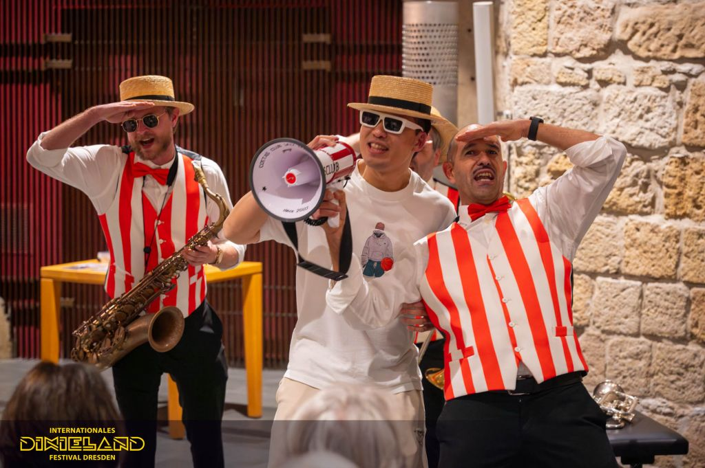

这一周，德累斯顿迎来了迪克西兰音乐节（International Dixieland Festival），这也是全世界规模最大的传统爵士乐盛会。从2023年第一次打卡开始，今年已经是我连续第四年参与了。随着听的场次越来越多，我也慢慢摸清了自己的口味，所以今年的行程非常有针对性。不过说到底，我最迷恋、最享受的始终是那份无可替代的现场氛围，感觉让人非常开心。
今年感觉非常神奇，感觉成了大明星，互动满满。Dan Popek 的钢琴，女朋友被他拉上去和他一起演奏，她根本没有摸过钢琴。Dan 悄悄地给她说弹黑键就行，然后我跟她解释，说很多调性你只要弹黑键就不会出错，最后一起演奏的结果非常不错。我中场的时候和他交流，看到他的 CD 背面有拉赫马尼诺夫升C小调前奏曲（Op.3, No.2）的改编版本，我觉得特别离谱，因为我根本无法想象这首曲子怎么改成爵士。结果他特别自然地跟我说：“下半场我给你弹。”哈哈，真的很有趣。
另一个来自葡萄牙的乐队 Cottas Club，中间也把我拉上了场。平时都是看别人炸场，这一次终于轮到我自己了。后来回头看视频的时候还是觉得太嗨了，整个现场那个氛围真的绝了。我自己唱跳的时候完全没有拘束，很自然，很顺，像是一下子进入了那个状态。下场之后还有好几个人来问我，有人甚至以为我和他们认识，还问我是不是专门请来互动的。哈哈，非常神奇。
第二天晚上最期待的是来自荷兰的乐队 The Busquitos。这个乐队特别有风格，但我到现在也说不上来他们到底是什么风格。感觉像是把音乐玩成了喜剧。尤其是那个小提琴手，我第一次感受到原来一件乐器真的可以演奏出“喜剧感”。那种夸张、调皮、故意使坏一样的感觉特别有冲击力，真的让我大受震撼。而且他们整个乐队本身就是以互动表演为特色，和我们也互动了很多。很多细节也特别有意思，比如萨克斯手衣服上就写着 “super saxy”，这种小设计特别有他们自己的味道。
后来又去听了 Peter Glessing & Band。这个老头真的特别有意思。发型很有意思，说话很有意思，最震撼的是他居然把黑管和萨克斯吹出了唢呐的感觉！而且特别有劲，你能完全感受到他身体里那股对音乐的热爱。乐团里敲鼓的是他儿子，大提琴手和他合作了也有四十多年了。最让我动容的是，他明明已经不年轻了，但连续演奏了几个小时之后，那股劲头还是一点没掉下来。体力、精力、投入感，全都特别惊人。等他演完已经凌晨了，我们离开的时候刚好在楼下碰见他在装乐器。他居然还主动过来跟我们聊天，说完了还抱了抱我们。真的是一个非常可爱的老头。
后来的几天时间里就更神奇了。开始不断有人认出我。甚至隔了两天之后，在路上还有一个阿姨突然叫住我，给我看她录的我和葡萄牙乐队互动的视频。而这件事对我来说简直像“救命”一样。因为 iPhone 那段时间大面积的录音故障问题，我自己拍下来的那段视频完全没有声音，只有高频电流声。我赶紧请阿姨把视频发给我，后来后期的时候把她视频里的音轨抽出来，重新配回了我的画面里。那一刻真的有种视频重新活过来的感觉，简直太神奇了。
其实从第一年来迪克西兰音乐节，到今年已经是第四个年头了。回头想想，最让我印象深刻的始终不是某一首曲子，而是人与人之间那些很奇妙的连接。去年也是这样。Sunshine Brass 给了我一个乐器，说我只要跟着节奏摇就行，然后我就真的和他们一起演奏了。后来中场的时候，乐队里的一个小伙子还专门跑来和我们聊天、合影，他也是其中一个成员的儿子。还有另一个我们特别喜欢的乐队，主打 Boogie Woogie，但又混着一点摇滚的味道。中场的时候，键盘手和贝斯手也主动来和我们聊天。
这种感觉真的很有魔力。音乐本身当然很重要，但很多时候，真正留在记忆里的，其实是那些人与人之间突然产生连接的瞬间。一个拥抱，一句玩笑，一次被拉上台的互动，一段意外被救回来的视频，这些东西最后都会慢慢变成记忆里最亮的部分。相比较而言，古典音乐会有时候会显得“闷”一些。大家安静地坐着，保持距离，掌声也很克制。但迪克西兰音乐节不一样，它会让你不知不觉走进去，参与进去，最后甚至变成其中的一部分。而我大概也是因为这个原因，才会连续四年都回来。